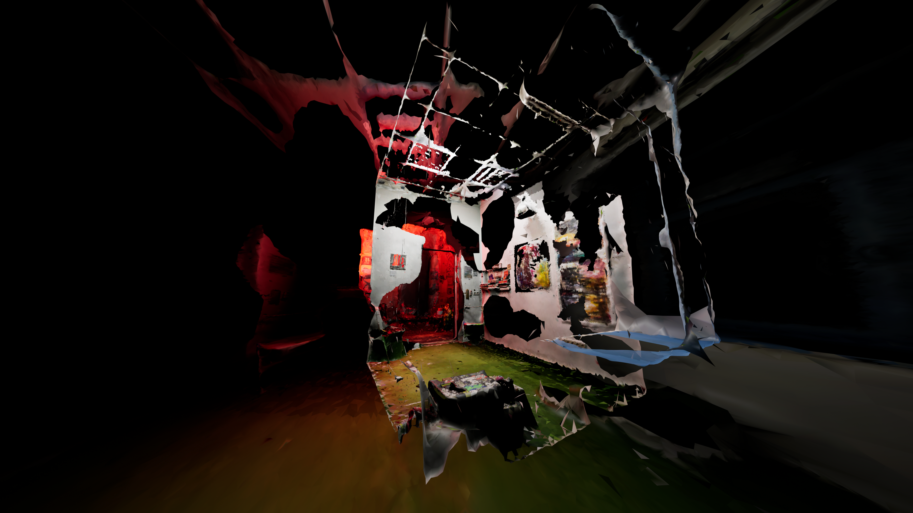
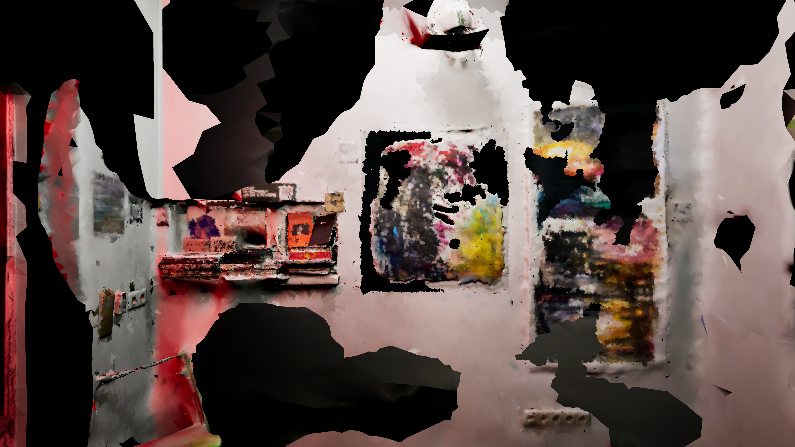
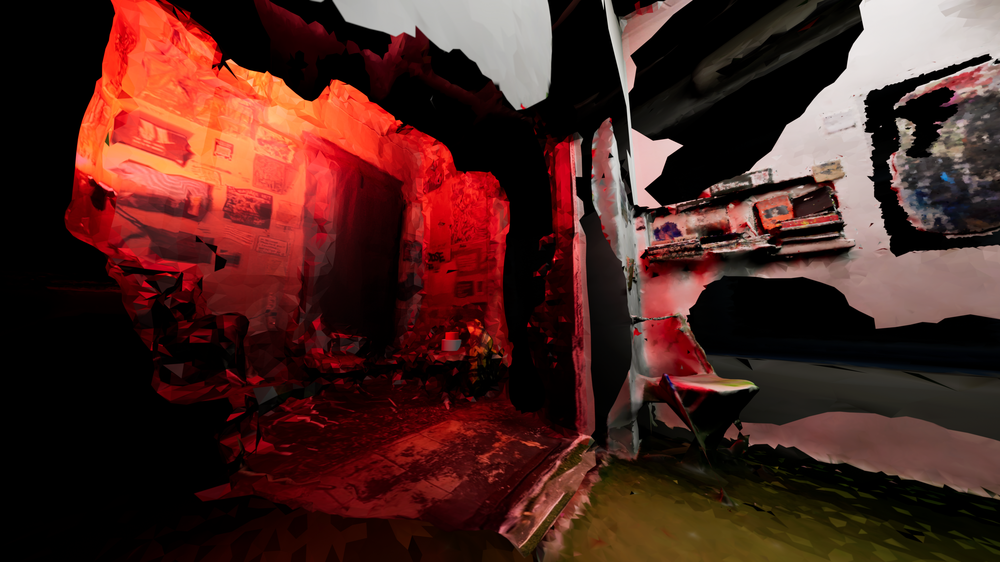
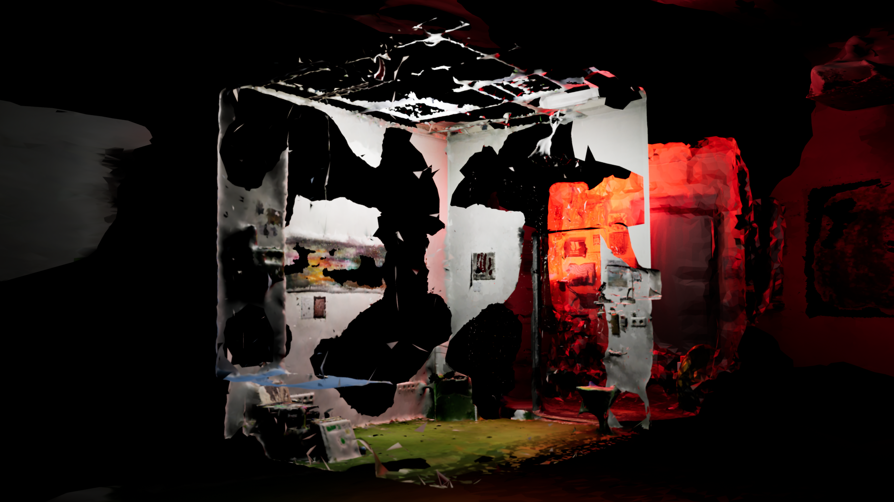
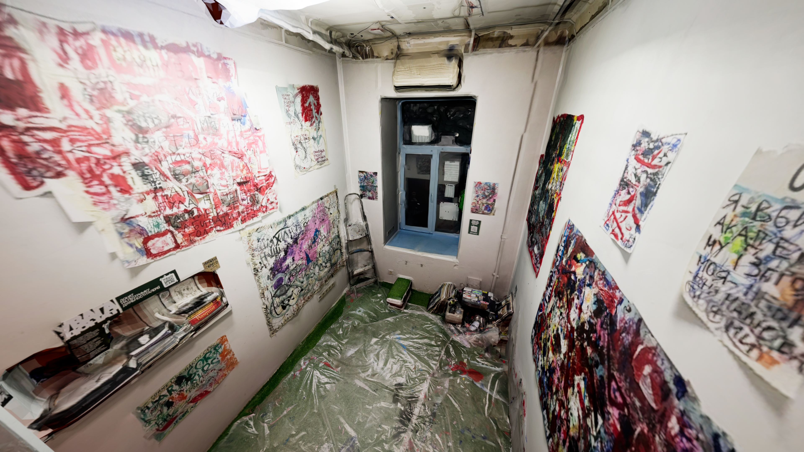
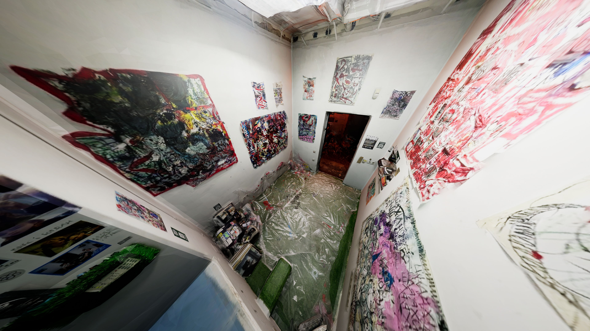
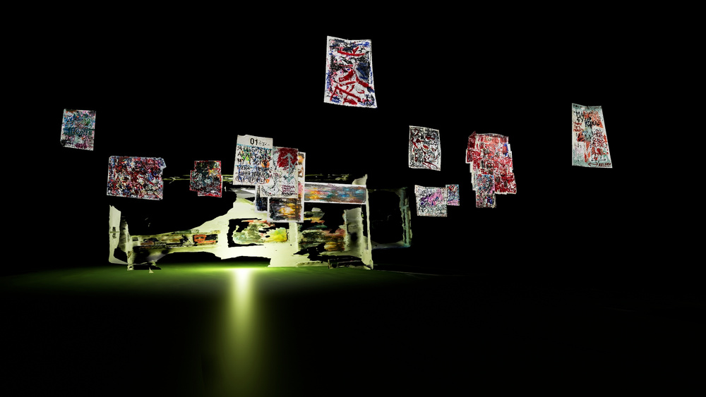
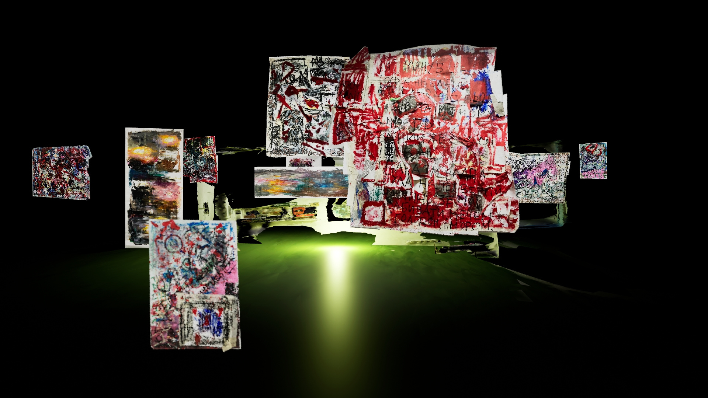
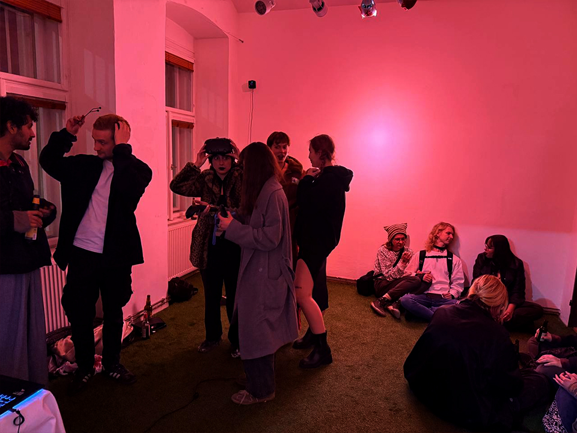
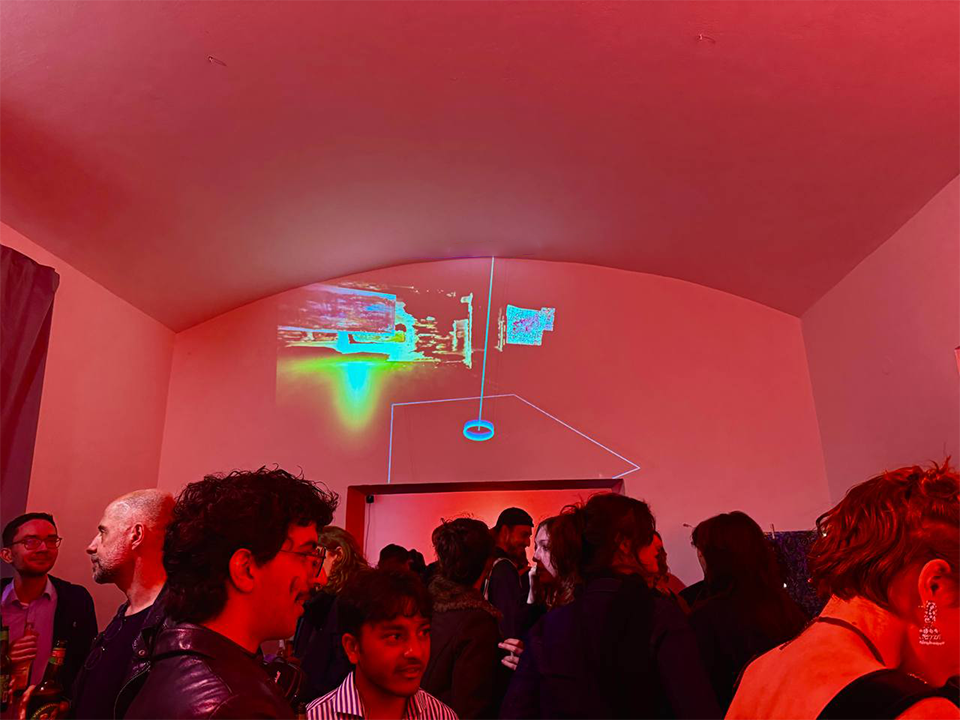

Interactive Virtual Exhibition
2025
VR Installation. Collaboration with Polina Hortivluk and Flowerbed Galllery.
The project involves a showcase of a real gallery space in Kyiv, Ukraine in a virtual space accessible through VR glasses. The installation itself consists of three levels: a partially destroyed, distorted exhibition (raising questions about the accessibility of culture and international exchange during active warfare), a collaborative exhibition of the co-founders of the gallery, and a digital archive. The artworks in the scene are distorted due to limitations of the 3d scanning proccess, the archive level gives a possibility of experiencing the works, which are photos in high resolution, in good quality.
The project was exhibited at Mistechko Gallery, Prague.
Software: Unreal Engine 5, VR










